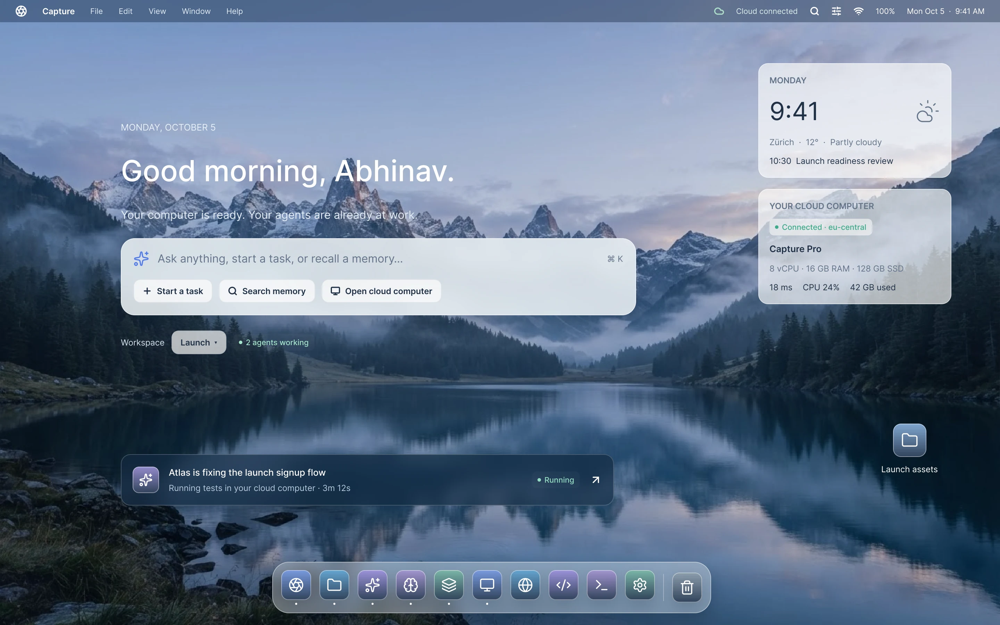

Everything you collect.
Somewhere it becomes useful.
Capture is your personal workspace for information and AI. Collect anything, bring it into a Space, and let an agent organize the context and help you get work done.
A desktop-first workspace for the way you work with information.
Executive Summary & Recommendation
Based on the newly added architecture notes and MCP specs, client-side streaming can be implemented via stdio without context drift.
Your information is everywhere.
Your context isn't.
A project rarely lives in one place. A PDF in Downloads. A link in your browser. A screenshot on your desktop. A conversation in an AI chat. Notes in another application.
Every time you switch tools, you rebuild the context. Capture gives all that information a place to come together.
Scattered information
Your work is distributed across disconnected applications, folders, browser tabs and temporary file paths.
Repeated context
You repeatedly re-explain the same project background and paste duplicate files into AI chats over and over again.
Manual organization
You spend valuable creative hours sorting directories and renaming files instead of actually using your information.
From scattered information
to organized work.
No complicated filing systems. No repeated context-building. Just collect, connect and work.
Save text, files, screenshots and links instantly.
A global keyboard shortcut sends items straight into your unified Inbox from anywhere on your Mac. No folder prompts, no cognitive interruption.
Bring related information together through drag and drop.
Drag captures into dedicated Spaces built around actual projects. Group files naturally, preserve connections, and assemble your project's true footprint.
Let the agent understand, organize and work with your context.
The Space agent indexes full content, flags conflicting details, suggests structures, and produces verifiable deliverables with source links.
Not another folder.
A place where your work comes together.
Spaces are structured environments built around what you're working on. Unlike rigid file hierarchies, each Space brings together your entire context:
- Documents & PDFs
- Screenshots & visual references
- Deep research notes & web links
- Document relationships & semantic links
- Agent-generated outputs, summaries & syntheses
The agent understands the information within each Space and helps maintain its organization as your project develops.
Explore Spaces →
An agent that understands
what you're working on.
Instead of repeatedly uploading documents and explaining context, give the agent access to the information already inside your Space.
Arrange
Automatically organize related information into groups and useful structures as documents accumulate.
Understand
Retrieve precise information across formats, identify latent connections, and detect possible contradictions.
Create
Turn the information in a Space into structured summaries, actionable roadmaps, checklists and living documents.
• Created logical groups: System Architecture and Competitive Analysis
• Identified 4 related documents and cross-indexed API payloads
• Flagged 1 potential contradiction: Session TTL in spec-v2.md (15m) vs client-cache.ts (60m)
• Highlighted missing component: No test coverage criteria specified for fallback transport
Your context shouldn't be locked
inside one application.
Capture uses MCP to make permitted Space information available to external AI clients. Bring your Capture context into the tools you already use.
Claude Desktop
AvailableQuery your Spaces directly inside Claude Desktop conversations via local stdio MCP transport.
Cursor
AvailableFeed non-code project research, PDFs and design notes into Cursor code generation sessions.
ChatGPT
BetaConnect permitted Spaces through secure webhook bridges for contextual chat interactions.
Other MCP Clients
AvailableStandard JSON-RPC 2.0 interfaces compatible with any open MCP tool harness or custom agent script.

Capture belongs where
your work happens.
A native desktop experience designed around fast, frictionless access:
Capture is built for the desktop first, with a companion web experience for accessing your work anywhere.
Download Capture →Your information stays yours.
Your personal information and project context deserve clear, uncompromising boundaries. We do not make unsubstantiated marketing claims.
Private Spaces
Context is compartmentalized per Space. AI queries cannot leak between unpermitted Spaces.
User-controlled access
You decide which external clients and models have read access to specific files.
Revocable integrations
Disconnect Claude, Cursor or any MCP bridge instantly with one click.
Full data export
Download your complete Space contents, original assets and agent history anytime.
Account deletion
Permanent deletion guarantees removal of indexed vectors and metadata.
Transparent AI processing
Explicit visibility into model providers used, prompt structures, and API data agreements.
Give your information somewhere to become useful.
Bring your files, ideas and research together. Let Capture help you turn them into work.
Desktop-first · Built for individual work
Common questions about Capture
Clear answers on how Capture fits your daily workflow.